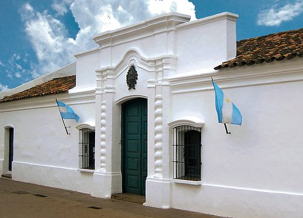
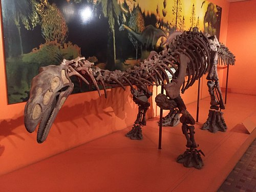
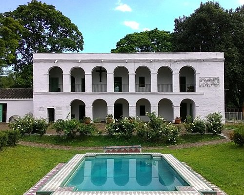
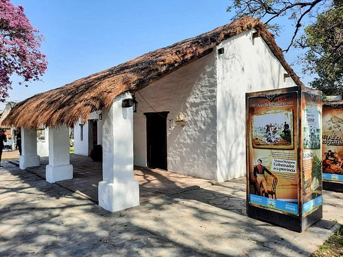

- Museo Casita de Tucuman
- Museo Miguel Lillo De Ciencias Naturales
- Museo de la Industria Azucarera
- Museo Casa Belgraniana Solar Histórico
Casita de tucuman
Es el lugar donde se firmo la Independencia de Argentina el 9 de Julio de 1816. Una visita que recomendamos totalmente, como tambien el espectaculo de luz y sonido. Ambos son gratuitos.
En el interior de la Casa historica hay un museo y se conserva en perfecto estado la Sala de Jura, lugar exacto donde se firmo el acta de independencia.
Mas informacions presione Aqui
Museo Miguel Lillo de Cs. Sc.
Museo moderno , colección riquísima y paseo imperdible
Vale la visita recorrer el parque y conocer sobre el científico Miguel Lillo
Mas informacions presione Aqui
Museo de la Industria Azucareca
Excelente opción para conocer los orígenes de la industria azucarera, como así tambien su evolución.
Mas informacions presione Aqui
Csa Belgraniana
Si bien es una réplica, los minuciosos detalles de la Casa Belgraniana nos hace palpar y vivenciar la vida cotidiana de uno de nuestros mayores próceres. El mural externo a la casa nos da una visión muy completa de nuestra historia americana.
Si bien es una réplica, los minuciosos detalles de la Casa Belgraniana nos hace palpar y vivenciar la vida cotidiana de uno de nuestros mayores próceres. El mural externo a la casa nos da una visión muy completa de nuestra historia americana.
Mas informacions presione Aqui